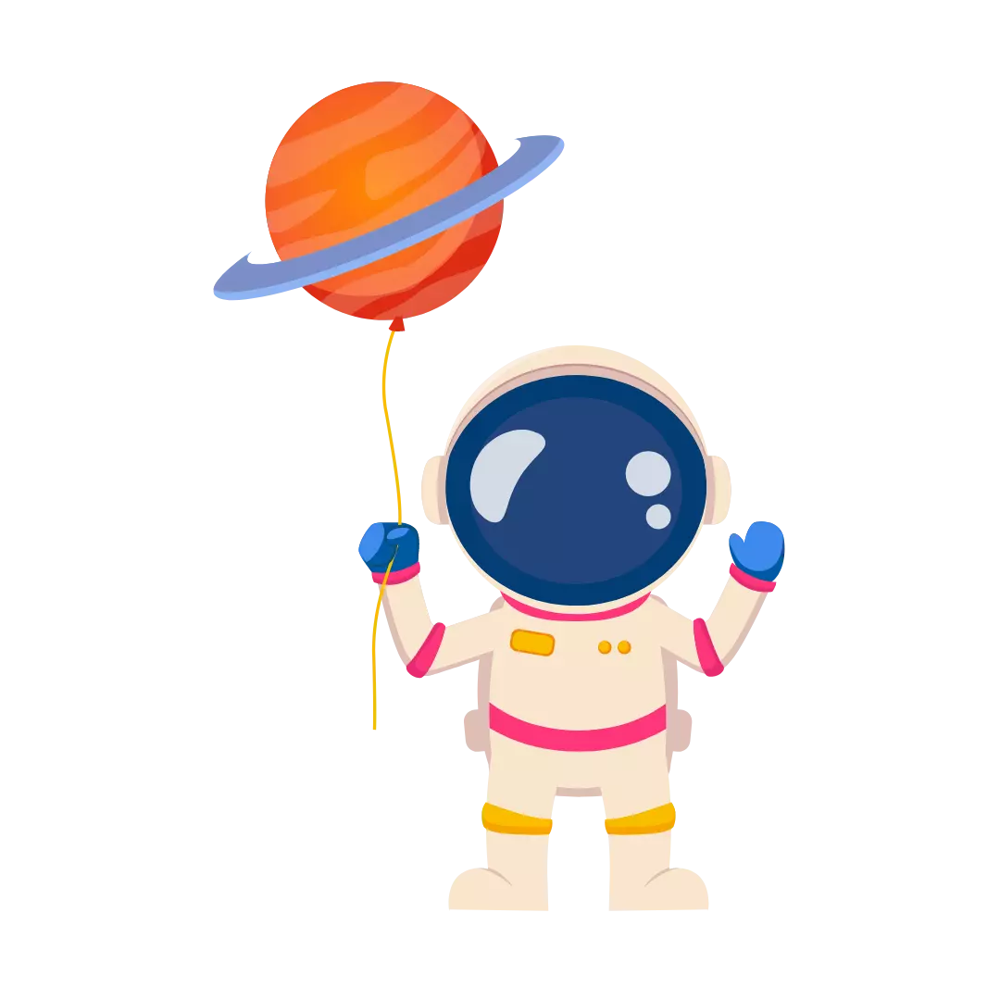

ERROR 404
¡Oops! Parece que te perdiste en el ciberespacio.
No te preocupes, incluso las naves espaciales necesitan un GPS.
Haz clic en el botón y volvamos a la tierra digital de be my guest. 🌍🚀
REGRESA AQUÍ¡Oops! Parece que te perdiste en el ciberespacio.
No te preocupes, incluso las naves espaciales necesitan un GPS.
Haz clic en el botón y volvamos a la tierra digital de be my guest. 🌍🚀
REGRESA AQUÍ